真实网球计分
使用大号可点击计分卡，自动记录 0–15–30–40、平分、占先、局、盘和抢七。
Tennis Score Wizard 可将 Apple Watch 变成适合真实网球比赛的快速计分器。你可以在手腕上记录分数、局数、盘数、抢七、发球位置、训练时间、实时心率、比赛历史和赛后自动统计。
下载于 App Store以 Apple Watch 为核心的计分流程：快速操作、正确网球规则、实用历史记录，以及清晰的赛后分析。
使用大号可点击计分卡，自动记录 0–15–30–40、平分、占先、局、盘和抢七。
比赛结束后，History 可以显示分数、发球、接发球、关键分、抢七和比赛节奏统计，这些都来自正常计分点击。
可选择将网球比赛记录为 Apple Health 训练，并查看平均心率、最高心率和活动卡路里。
使用抛硬币选择先发球方、发球侧提示、Switch Server、Undo、自动结束比赛和本地比赛历史。
完整比赛流程：设置、训练记录、实时计分、抢七、已结束比赛、历史记录和自动统计。
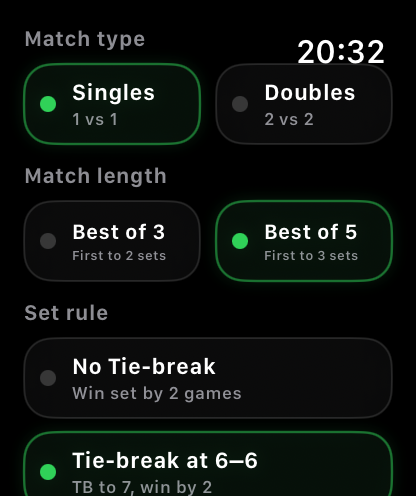
比赛开始前选择单打或双打、Best of 3 或 Best of 5，以及盘规则。
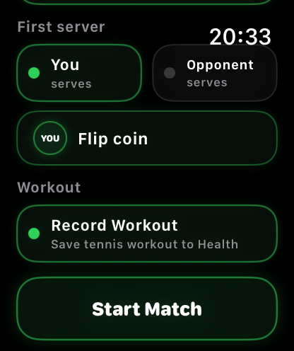
选择先发球方，使用抛硬币，开启 Record Workout，并从同一屏幕开始比赛。
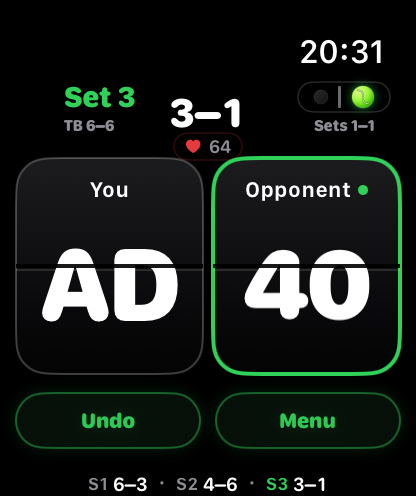
通过大号卡片计分，同时查看发球方、发球侧、盘数、训练状态和实时心率。
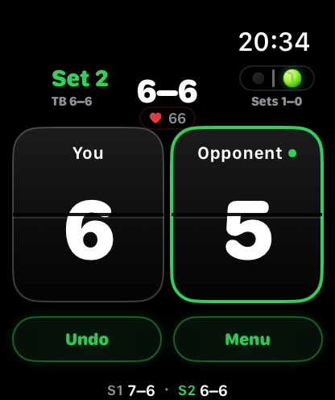
在 6–6 时，用同样大而快速的 Apple Watch 控件记录抢七分数。
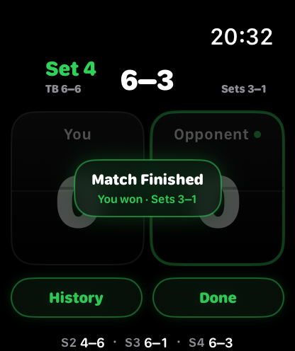
当比赛决出胜负后，App 会显示获胜方、盘分结果，并可快速进入 History 或 Done。
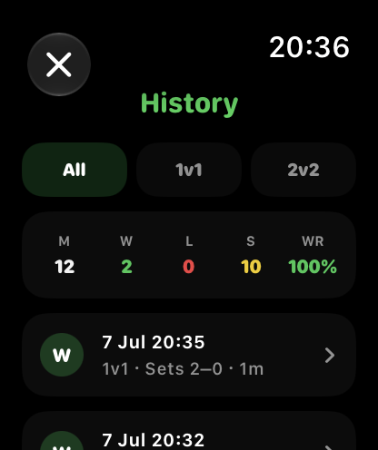
直接在 Apple Watch 上查看胜场、负场、中止比赛、胜率和已保存比赛。
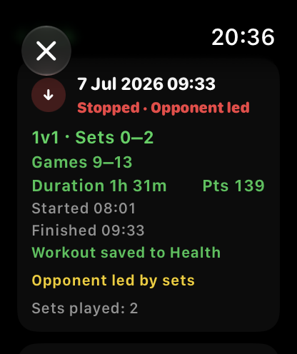
打开已保存比赛，查看比分、局数、时长、总分、训练状态和中止比赛上下文。
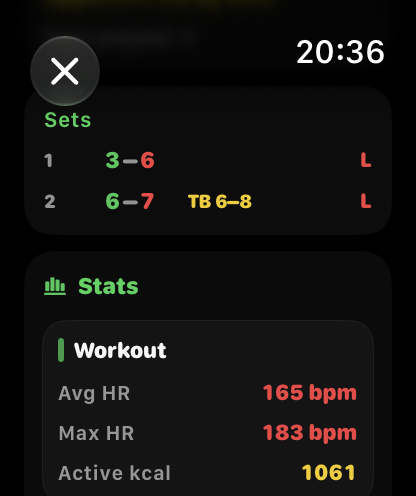
已记录的训练可在比赛保存后显示平均心率、最高心率和活动卡路里。
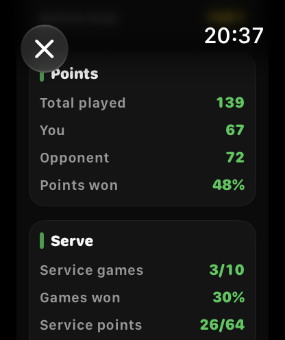
查看总分、双方得分、发球局和发球得分。
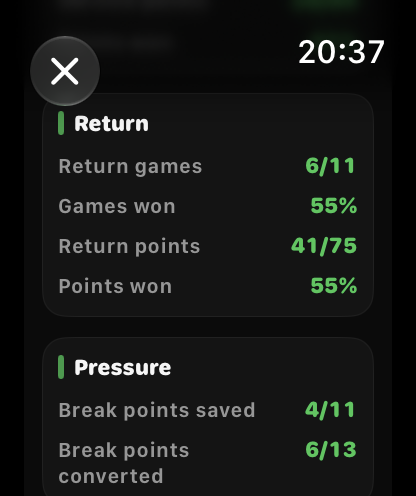
查看接发球局、接发球得分、挽救破发点和兑现破发点。
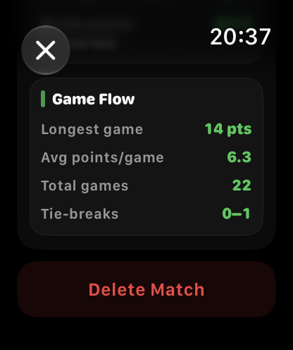
查看最长的一局、平均每局分数、总局数以及抢七胜负。
1.2 版本在 History 中加入自动统计。它们由你的正常计分点击计算得出，因此不需要额外输入 ACE、制胜分、回合长度或其他比赛数据。
显示总共进行了多少分，以及双方各赢了多少分。分数差距很小通常说明比赛比盘分看起来更接近。
显示你在自己发球局中的表现。发球局是你发球的局；发球分是你发球时进行的单个分。
显示对手发球时你的表现。赢下接发球局就是破发。接发球得分显示你在对手发球时赢分的频率。
挽救破发点是你在自己发球时顶住的破发点。兑现破发点是你在对手发球时赢下的破发机会。
显示比赛节奏：最长的一局、平均每局分数、总局数以及抢七胜负。
如果开启 Record Workout 并授予 Health 权限，History 可以显示已保存网球训练的平均心率、最高心率和活动卡路里。
下面是赛后常见统计行的读法。
你赢了 67 分，对手赢了 72 分。差距很小通常表示比赛比盘分看起来更接近。
你在 10 局中发球，并赢下了其中 3 局。这表示你保发的频率。
对手在 11 局中发球，你完成了 6 次破发。
你在自己的发球局中面对 11 个破发点，并挽救了 4 个。
你有 13 次破掉对手发球局的机会，并成功了 6 次。
每局平均约 6 分。数值越高，通常代表局数更长、更胶着。
自动统计加入之前保存的比赛可能不包含统计数据。使用 1.2 或更高版本保存的新比赛可以包含新的 History 统计。
比赛历史会保存在你的设备本地。Health 访问是可选的，仅用于训练记录和与心率相关的训练详情。
选择 Singles 或 Doubles，选择 Best of 3 或 Best of 5，选择盘规则，手动或通过抛硬币选择先发球方，可选择开启 Record Workout，然后开始计分。
在设置时开启 Record Workout。如果授予 Apple Health 权限，比赛可以作为网球训练记录并保存到 Apple Health。
当授予 Apple Health 权限且 Apple Watch 提供心率数据时，实时心率会在记录训练时显示。
比赛进行中，Menu 可访问 Switch Server、停止未完成比赛、打开历史记录或开始新比赛等操作。
Undo 会撤销最后记录的一分，并恢复之前的比赛状态，包括分数、局数、盘数、发球方、发球位置、抢七状态和统计计数器。
当你发球时，网球图标会提示你应该从哪一侧发球。当对手发球时，它会从你的手表视角提示对手的发球侧。
已保存比赛使用紧凑的网球记法，让结果和统计在 Apple Watch 上保持易读。
Win 表示你按盘数赢下了已完成比赛。Loss 表示对手按盘数赢下了已完成比赛。
Stopped 表示比赛在正常结束前被保存。App 会保留真实比赛上下文，包括盘、局、时长、分数和已收集统计。
S1、S2、S3 表示第 1 盘、第 2 盘和第 3 盘。例如 S1 6–3 表示第一盘以 6 比 3 结束。
TB 表示 7–6 盘中的抢七分数。例如 7–6 · TB 7–3 表示该盘 7–6 获胜，抢七比分为 7–3。
如果中止比赛有明确的盘数领先，History 会显示谁按盘数领先。如果盘数相同，App 会比较局数，然后比较可用的抢七分数。
对于中止比赛，如果当前未完成的一盘已有进展，也会保存，以保留真实比赛上下文，例如 S3 0–1。
不会。比赛历史保存在你的设备本地。App 不需要账户，也不会把比赛历史发送到服务器。
不需要。Health 访问是可选的。你可以不记录训练，只使用网球计分功能。
不需要。统计由正常计分点击生成。App 不会要求你输入 ACE、制胜分、非受迫性失误或回合长度。
可以。App 支持单打、双打、Best of 3、Best of 5、长盘规则和抢七盘规则。
可以。已保存比赛可在 History 屏幕删除。
比赛历史会保存在你的设备本地。App 不需要账户，不会传输、出售或共享个人数据。
Apple Health 访问是可选的，仅在获得授权后用于记录网球训练，并在记录比赛时显示实时心率。